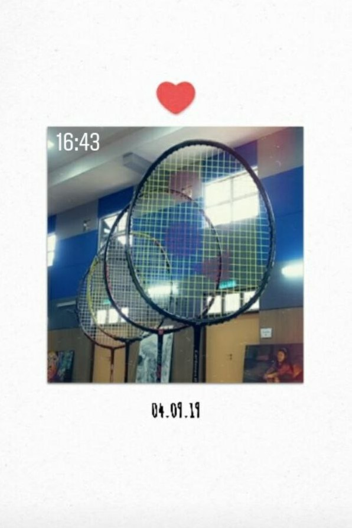
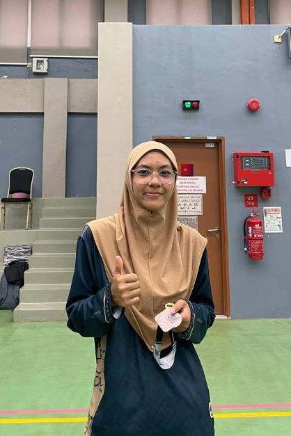
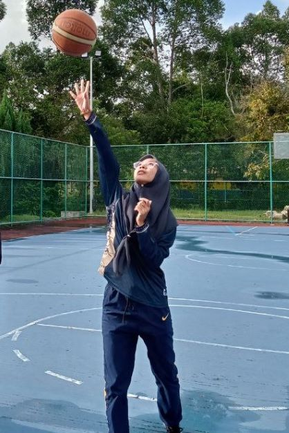

| Home | AboutMe | Love | Friend | Art | Life | ContactMe |
|
|
|
|
| Badminton | Volleyball | Basketball |
|---|---|---|
|  |  |  |
I started playing badminton at the age of 11 just for fun. Over time I made badminton as hobby till now. The racket I always use is my father's racket. The racket is very legendary.Even I love to play badminton I did not playing as my career because of my father's wishes wanted me to focus on education. |
I never once thought of being involved in volleyball. But initially when I was still waiting for the SPM results, a group of teenagers in my housing estate actively played badminton and volleyball. From there I learned how to play volleyball. Until I entered the university, I was given the opportunity to be a faculty representative for the SAF (Inter-Faculty Sports) match. Luckily,we as a team got third place together even though we didn't actually come for training. It's a sweet memory! |
"It starts with a love story." My ex-boyfriend is a basketball player, I started looking into this sport because of him. But at that time, we were not given the opportunity to play together because the distance between us. Day by day I found new friends who are interested in playing basketball. When I'm with her we'll play basketball. But the painful fact is that every time I play basketball I am reminded of my ex-boyfriend. But I still enjoy it! |
| "Hidup tak selalu diatas dan tak selalu dibawah, sentiasa lah melihat dunia dengan bijak, agar tidak melanggar mana-mana paksi keriakkan" | "Ihfazillah Yahfazka. Jagalah ALLAH, ALLAH akan menjagamu." | "Nasihat yang baik tidak terlihat kepada usia seseorang yang memberi nasihat, boleh jadi manusia yang tiada pendidikan pun mampu memberi nasihat yang lebih padu daripada nasihat orang terdahulu. Kerana zaman kini cepat berubah." | "Tetapi lah single walaupu sering kesorangan dan kesunyian daripada taken menyusahkan kehiduapan untuk merisaukan orang yang tak pasti dia jodoh kita. Singellah sehingga engkau jumpa seseorang yang betul-betul layak untuk kehidupan sehidup semati" |
| "Jika dalam sesuatu perkara, engkau sering mengeluh dan menyalahkan orang lain, percaya lah dan berusaha lahh untuk pandang kebelakang seketika untuk mengambil segala pengajaran yang ada kerana mungkin hatimu semakin hitam." | "Sayangi dan hargai mereka yang masih ada disisi, jangan setelah engkau merasakan kehilangan baru hendak menghargai." | "Boleh sayang, boleh suka, boleh cinta, tetapi jangan melebih cinta Ilahi. Kerana engkau akan tersakiti jika engkau lupa akan cinta hakiki. | "Kalau dah sayang, berusaha untuk membawa ke jalan yang bernar. Lawan lah semua nafsu dan bangkit ke arah yang benar. Biar sayang dengan cara yang benar!" |
|